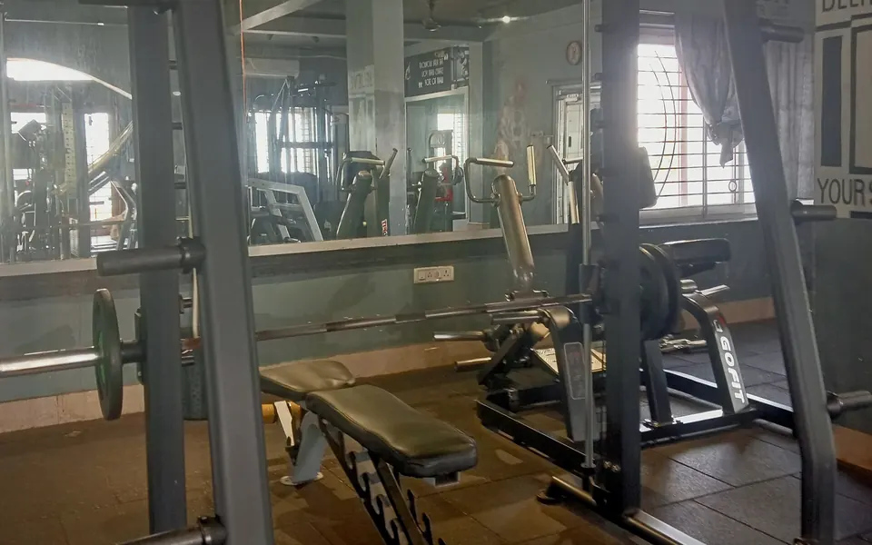

MondayChest / Push
Today
- Cable flies, high to low squeeze at the center
- Cable flies, low to high upper chest
- Incline press dumbbells or barbell
- Flat bench press dumbbells or barbell
- Finish: fly machine, push-ups, or dips
Cardio: 10–15 min stair climber